01Overview
We image an iron-loaded tumor inside a rabbit-scale phantom and ask at
what iron dose the nanoparticles become detectable, and how detector type and
beam-hardening correction shift that limit. This page updates as the pipeline runs —
every figure below is regenerated from results/ by
src/build_dashboard.py.
| Factor | Levels |
|---|---|
| Formulation conc. (delivered mass model) | 0, 0.5, 1, 2, 5, 10, 20 mg SPION/ml |
| Detector | Energy-integrating (EID), Photon-counting multi-bin (PCD) |
| Beam-hardening correction | off, on |
| Noise realizations @ 70 000 ph/px | 30 |
| Geometry | C-arm cone-beam, 500 projections, 20 cm FOV |
02X-ray spectrum
CONRAD standard polychromatic spectrum used for the forward model, plus the energy-bin thresholds used by the photon-counting detector.
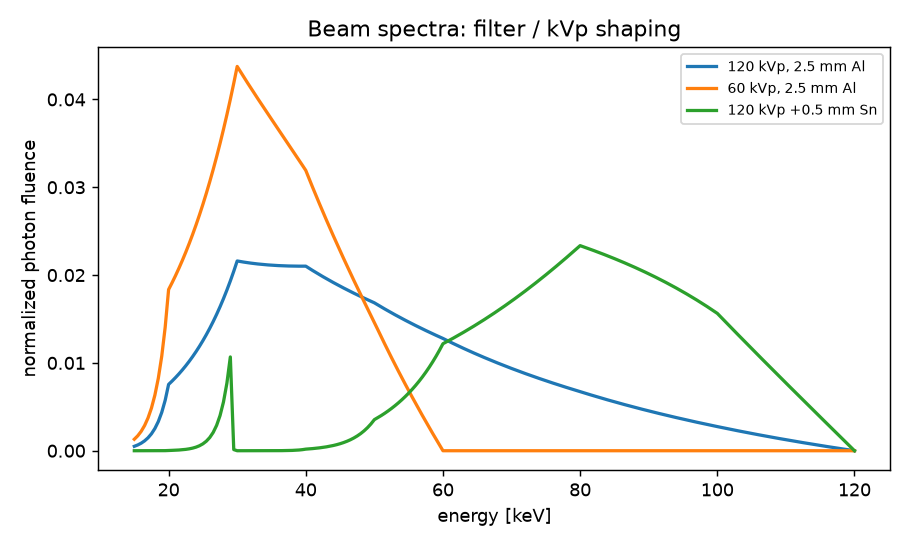
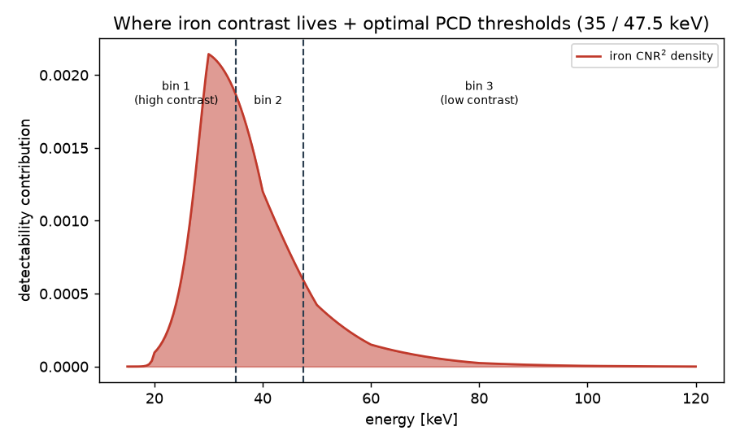
03Materials & attenuation
Iron is loaded into a soft-tissue matrix (not water) so a zero-iron tumor matches background. These plots verify the attenuation model before imaging.
What the nanoparticles are, and how we count them
The formulation we ground on is a real polyacrylic-acid (PAA)-coated magnetite (Fe3O4) SPION suspension: iron-oxide cores of ~8 and ~12 nm that assemble into hydrodynamic clusters of ~70–250 nm. The reference article characterizes the suspension by its iron concentration (mg Fe/ml), measured by ICP-MAES on acid-digested particles over a working range of 1–10 mg Fe/ml; the PAA coating never enters that concentration bookkeeping.
For X-ray this is the right anchor. Contrast is driven by the iron oxide, and we model the oxide (magnetite), whose iron mass fraction is 0.724 (3·55.85/231.5) — so the bound oxygen is included (~+7% over pure Fe).
Full-nanoparticle simulation (magnetite core + PAA coating)
We simulate the whole particle, not just the iron: the tumor material is the ICRU
soft-tissue matrix + magnetite (mass = cFe/0.724) + the PAA coating
(polyacrylic acid, monomer C3H4O2, registered as a CONRAD
C/H/O material). From the tumor iron concentration we estimate the whole-nanoparticle
concentration cNP = cFe / (0.724 · (1 − φ)), where φ is the
coating's mass fraction of the particle.
φ is now taken per formulation from the article's supplementary TGA (Table A.1 /
Fig A.1), replacing the earlier single estimate. The inorganic (iron-oxide) residual is
87.7 % for SPION I (12 nm cores) and 66.4 % for SPION II (8 nm cores); on heating
the residual oxidizes magnetite → hematite (+3.4 % mass, article Eq A.1), so the original
magnetite fraction is Rm/1.034 = 84.8 % (SPION I) and 64.2 % (SPION II).
The complement is PAA: φ ≈ 0.15 for SPION I and φ ≈ 0.36 for SPION II — SPION II
carries roughly twice the coating. (The earlier central estimate φ = 0.15 turned out ≈ exact
for SPION I.) Each formulation uses its own coating: cNP ≈ 1.625 · cFe
(SPION I), cNP ≈ 2.16 · cFe (SPION II). φ sets only the
reported mg SPION/ml; the PAA is low-Z (C/H/O), essentially tissue/water-equivalent, so it is
negligible for the X-ray μ — adding it moves the monochromatic iron ΔHU at the top dose
by only ≈ 3.6 % at φ = 0.15 (3.62 → 3.75 HU @ 60 keV), and the iron contrast is unchanged.
Particle concentration vs. iron concentration
These two are easy to conflate, so we keep them separate. The independent variable is a
particle concentration (mg SPION/ml); via the delivered-mass model it maps to a tumor
iron concentration cFe = 0.0543 · cform (mg Fe/ml),
and to a whole-nanoparticle concentration cNP = 1.625 · cFe.
All contrast and detectability numbers on this page are reported as mg Fe/ml in the
tumor.
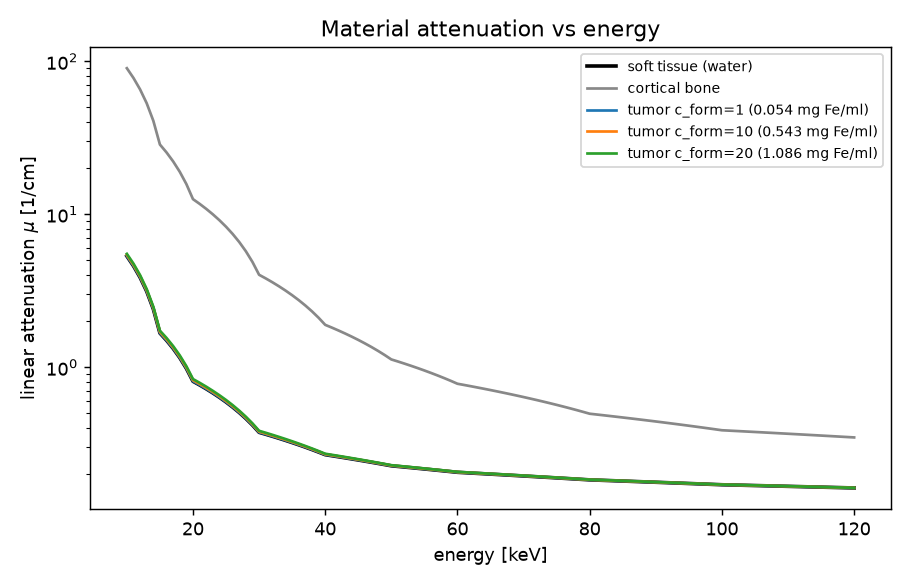
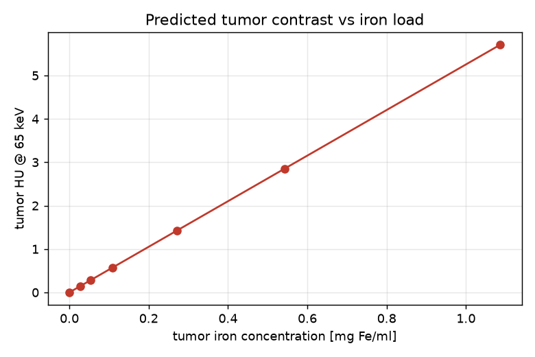
04Digital phantom
Rabbit-scale ICRU soft-tissue cylinder with a cortical-bone insert (beam-hardening source) and an 8 cm³ iron-loaded tumor.
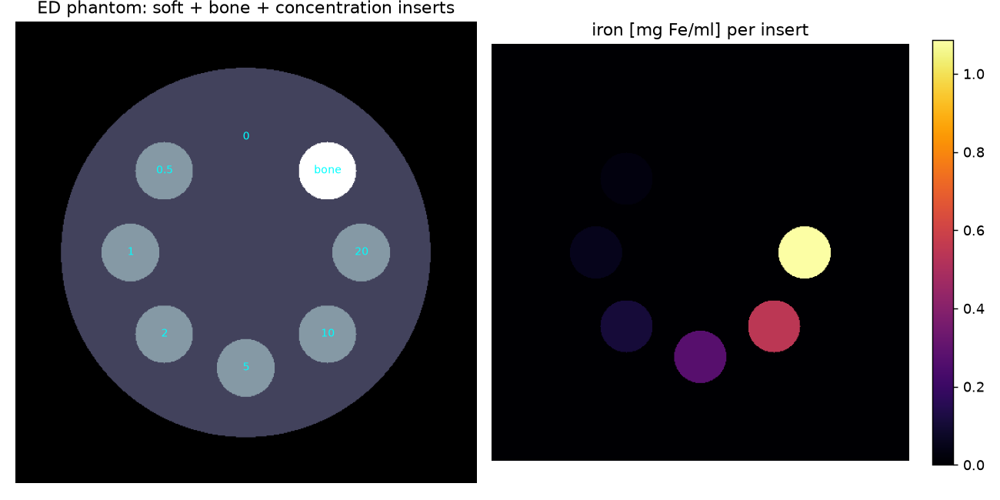

05Projections
Polychromatic forward projections (500 views). One example projection and a sinogram per detector.
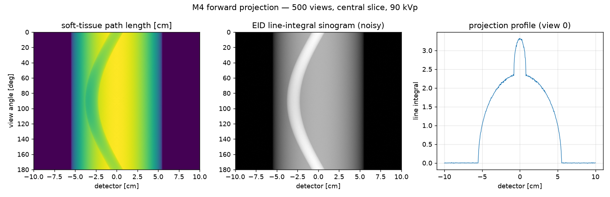


06Reconstructions
Fan-beam FBP of the calibration phantom — all seven iron inserts on a ring (cFe = 0–1.09 mg/ml), at a tight ±20 HU iron window. The labeled panel shows insert brightness rising with dose (1.09 brightest; 0.00 ≡ background). The gallery compares the two detectors with and without quantum noise: noise-free resolves all high-dose inserts and PCD gives higher insert contrast than EID; noisy (70 000 photons/pixel) is grain-limited at the single-slice level — detection relies on ROI averaging (see Detectability). The bone rod is omitted here for display: at an iron-level window its streaks swamp the inserts, which is exactly why the quantitative analysis uses a local-annulus background.
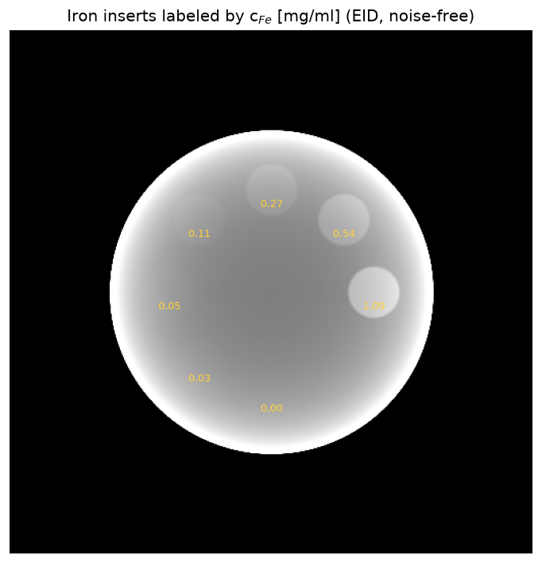
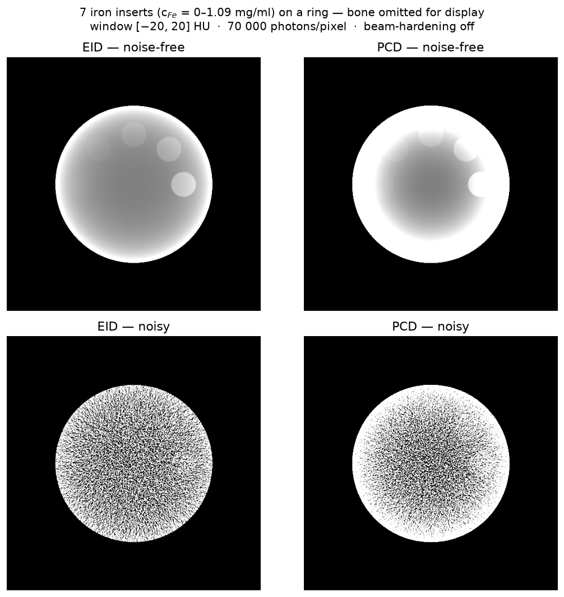
07Detectability
Contrast (ΔHU) and contrast-to-noise ratio vs. iron dose, with the Rose detection threshold. The table lists the lowest detectable dose per condition.
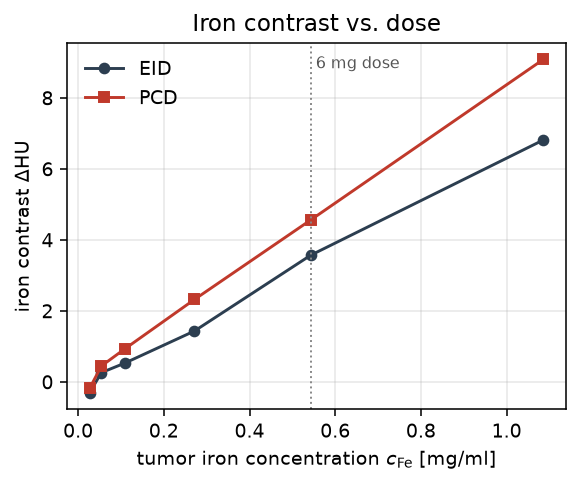
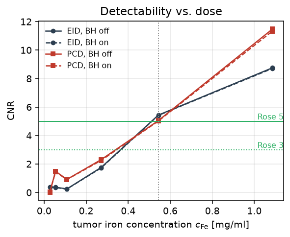
| Condition | Threshold (mg Fe/ml) | ΔHU @ 6 mg | CNR @ 6 mg |
|---|---|---|---|
| EID, BH off | 0.54 | 3.4 | 5.4 |
| EID, BH on | 0.54 | 3.5 | 5.4 |
| PCD, BH off | 0.54 | 4.7 | 5.0 |
| PCD, BH on | 0.54 | 5.0 | 5.0 |
The detection limit is ≈ 0.54 mg Fe/ml — the realistic 6 mg dose — essentially independent of detector and beam-hardening correction. SPIONs are borderline-visible at realistic loading.
Two experiments: cellular uptake vs. vascular (fresh) delivery
The same delivered iron mass is imaged under two biological distributions, run as one directly comparable factor (uniform vs. vessel) within a single design:
- Study A — homogeneous (cellular uptake). Iron internalised by tumor cells gives a ~uniform tumor iron distribution (the homogeneous level). Concentrations are sampled from the article's measured cellular loading (Fig 5, all configs incl. fresh; 0 h / 24 h): SPION I-113 nm 8.23 / 3.78, SPION II-115 3.86 / 1.52, II-98 3.60 / 1.37, II-76 2.51 / 0.85 pg Fe/cell, each converted via the tumor cell density and using its formulation's coating (SPION I φ ≈ 0.15, SPION II φ ≈ 0.36). Cite Heinen et al.
- Study B — vascular / "fresh" delivery. Freshly-injected SPIONs still in the blood carrier inside the vessels, before cellular uptake — contrast confined to the ~150 µm vessels (~10 % of tumor volume, 10× local concentration), heterogeneous (the vessel level), at the injection concentration. Referenced to the Genç/Lyer flow-accumulation context (suspension ~0.84 mg Fe/mL).
08Spectral shaping
Iron contrast is photoelectric, so it favors low energy. A tube-voltage and filter sweep confirms this end to end: lower kVp raises CNR, hardening filters lower it. A matched-filter photon-counting detector attains its ~1.3× ideal gain only at higher dose, where the low-energy bin is no longer photon-starved.
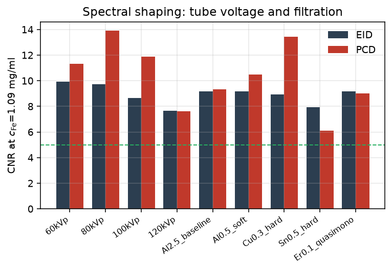
09Study B — vascular (fresh) delivery
The vascular/"fresh" phase (freshly-injected SPIONs still in the blood carrier inside the vessels, before cellular uptake, at the injection concentration) vs. Study A's homogeneous cellular uptake. The same iron mass is confined to 150 µm vessels (10% of tumor volume, 10× local). At the 0.5 mm voxel the vessels are unresolved, so partial-volume averaging with mass conservation makes the tumor-ROI contrast identical to the homogeneous case; the beam-hardening nonlinearity is < 10⁻³ HU and per-voxel structural texture averages out. Vascular (fresh) delivery is therefore CT-indistinguishable from homogeneous cellular uptake.
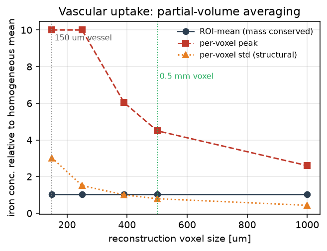
103D — real rabbit geometry
The .rctd RabbitCT format was reverse-engineered
(src/rabbitct.py) and its 496 projection matrices decoded into a real Siemens
C-arm short scan: SID 745 mm, SDD ≈ 1196 mm, 1248×960 detector, 496 views over 198°.
Ray-driven cone-beam DRRs of the post-mortem rabbit rotate correctly with view angle
(validating the geometry), and an inserted 8 cm³ SPION tumor projects as a localized
signal — the phantom for the planned full 3D FDK detectability study.
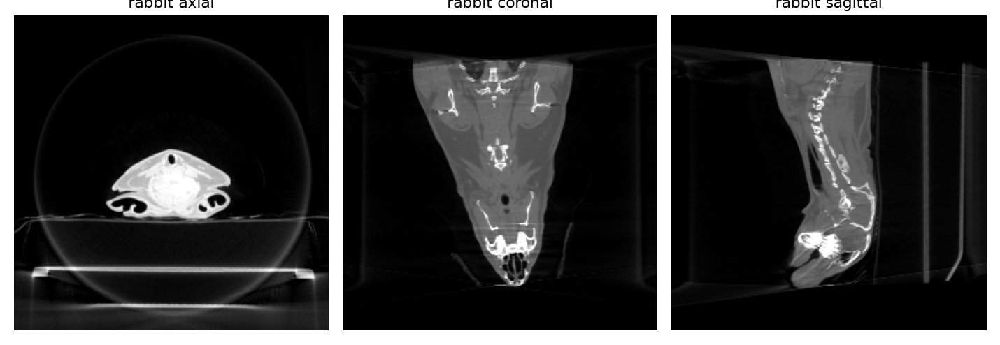
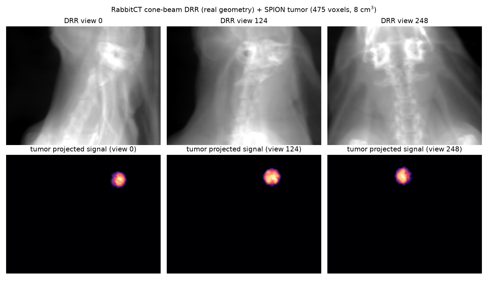
11Manuscript
A full SPIE Medical Imaging draft (10 pp.) assembles these results — dose model, phantom, factorial detectability, spectral shaping, Study B, and the 3D rabbit geometry — in the compiled PDF (source spie_manuscript.tex). The GPU spectral-detector and noise-generator machinery used here is upstreamed to CONRAD.
12Code audit
Annotated snippets of the key pipeline steps so a reviewer can audit the methodology without reading the whole codebase. illustrative — replaced by permalinked source after implementation (M0–M7)
Dose model — delivered mass → tumor iron concentration
The independent variable is the formulation concentration; a fixed particle mass is spread through the 8 cm³ tumor and converted to iron via the magnetite Fe fraction.
# c_form [mg SPION/ml] -> tumor iron concentration [mg Fe/ml]
FE_FRACTION = 0.724 # magnetite Fe3O4
DELIVERED_AT_10 = 6.0 # mg SPION delivered at c_form = 10 mg/ml
TUMOR_VOL = 8.0 # cm^3
def tumor_iron_conc(c_form):
m_spion = DELIVERED_AT_10 * (c_form / 10.0) # delivered particle mass [mg]
c_spion = m_spion / TUMOR_VOL # tumor particle conc [mg/ml]
return FE_FRACTION * c_spion # = 0.0543 * c_form [mg Fe/ml]
Custom materials — iron-loaded soft tissue
Iron is added to the same soft-tissue matrix as the background so that c=0 ≡ background.
# CONRAD custom material via pyconrad (JVM bridge) — API verified at M0
material = mixture_of("soft_tissue", add_iron_mg_per_ml=c_fe)
material.setDensity(RHO_SOFT_TISSUE + 1e-3 * c_fe) # negligible mass, high-Z contrast
MaterialsDB.put(material)
Polychromatic forward projection — 500 views, EID vs PCD
Line integrals are evaluated through the standard spectrum; the detector model sets whether photons are energy-weighted (EID) or counted per energy bin (PCD).
spectrum = PolychromaticXRaySpectrum(...) # CONRAD standard spectrum
model = PolychromaticAbsorptionModel(); model.setInputSpectrum(spectrum)
proj = forward_project(phantom, geometry_500_views, model, detector=det)
proj = apply_poisson_noise(proj, I0=70_000) # per-pixel photon count
Reconstruction & analysis — FDK, ΔHU, CNR
Beam-hardening correction is toggled here; metrics come from tumor vs. reference ROIs.
vol = fdk_reconstruct(proj, geometry_500_views, bh_correction=on_off)
d_hu = mean(vol[tumor_roi]) - mean(vol[ref_roi])
cnr = d_hu / std(vol[ref_roi]) # Rose: detectable if cnr >= 3..5
13Reproducibility
Every artifact on this page is regenerable from source.
- Environment: Java 8 + a pyconrad-compatible Python (3.9/3.10 venv).
- Run the study:
python run_experiment.py→ writesresults/. - Rebuild this dashboard:
python src/build_dashboard.py→ writesdocs/. - Full parameters and rationale: SPEC.md.